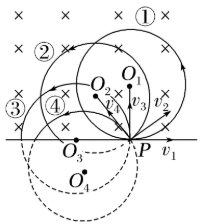
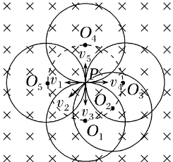
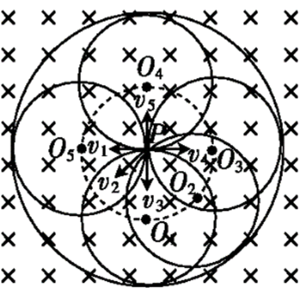
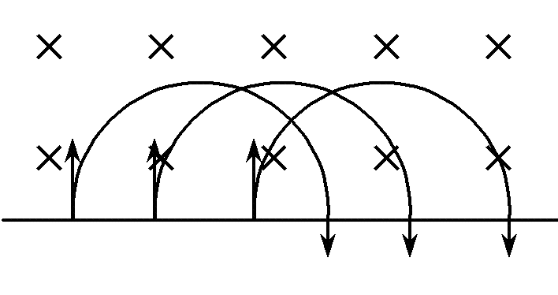

2旋转圆
【模型定义】
| 项目 | 内容 |
|---|
| 适用条件 |
速度大小一定，方向不同。粒子源发射速度大小一定、方向不同的同种带电粒子进入匀强磁场时，它们在磁场中做匀速圆周运动的半径相同。若射入初速度大小为 $v_0$，则圆周运动半径为 $r=\dfrac{mv_0}{qB}$。 |
| 轨迹特点 |
轨迹圆圆心共圆。带电粒子在磁场中做匀速圆周运动的圆心在以入射点 $P$ 为圆心、半径 $R=\dfrac{mv_0}{qB}$ 的圆上。 |
| 界定方法 |
将半径为 $r=\dfrac{mv_0}{qB}$ 的轨迹圆以入射点为圆心进行旋转，从而探索粒子的临界条件，这种方法称为"旋转圆"法。 |

图2 旋转圆：速度方向改变，等半径的轨迹圆绕 $P$ 旋转

图3 圆心圆：各轨迹圆的圆心 $O_1\sim O_5$ 位于以 $P$ 为圆心的虚线圆上
【要点点拨】当带电粒子射入磁场时的速率 $v$ 一定，但射入的方向变化时，可以以入射点为定点，将轨迹圆旋转，作出一系列轨迹，从而探索出临界条件。
【解题方法】要准确把握这一几何模型，需要认识和区分三种圆：
- 轨迹圆：每个粒子在磁场中均以半径 $R_1=r=\dfrac{mv_0}{qB}$ 做匀速圆周运动。随着入射点 $P$ 处速度方向的改变，这些轨迹圆可以看作是以点 $P$ 为圆心旋转构成的一系列动态旋转圆；
- 圆心圆：在轨迹圆旋转过程中，这些轨迹圆的圆心的轨迹在以 $P$ 为圆心、半径与轨迹圆半径相等（$R_2=r$）的圆上（图中虚线）；
- 边界圆：在轨迹圆旋转过程中，各轨迹圆上离圆心最远的点构成的轨迹也是一个圆，这个圆也是粒子能够到达的区域边界，其圆心是 $P$，半径为轨迹圆半径的两倍（$R_3=2r$），如图乙中外围黑体实线所示。

图4 三种圆：内虚线为圆心圆（$R_2=r$），外围粗实线为边界圆（$R_3=2r$）
$$R_1 = r = \frac{mv_0}{qB} \quad\quad R_2 = r = \frac{mv_0}{qB} \quad\quad R_3 = 2r = \frac{2mv_0}{qB}$$
⚠️ 易错提醒：
- 圆心圆的半径等于轨迹圆半径 $r$，不是 $2r$；
- 边界圆的半径是轨迹圆直径 $2r$ —— 粒子离入射点最远只能到达 $2r$ 处；
- 旋转圆中所有粒子的周期相同，在磁场中运动时间由圆心角决定。
3平移圆
【模型定义】
| 项目 | 内容 |
|---|
| 适用条件 |
速度大小一定，方向一定，但入射点在同一直线上。粒子源发射速度大小、方向一定、入射点不同但在同一直线上的同种带电粒子进入匀强磁场时，它们做匀速圆周运动的半径相同，若入射速度大小为 $v_0$，则轨迹半径 $r=\dfrac{mv_0}{qB}$。 |
| 轨迹特点 |
轨迹圆圆心共线。带电粒子在磁场中做匀速圆周运动的圆心在同一直线上，该直线与入射点的连线平行。 |
| 界定方法 |
将半径为 $r=\dfrac{mv_0}{qB}$ 的圆沿边界平移，从而探索粒子的临界条件，这种方法叫"平移圆"法。 |

图5 平移圆：各轨迹圆半径相同、形状相同，沿直线边界依次平移
【要点点拨】速度大小和方向相同的一排相同粒子从同一直线边界进入匀强磁场，各粒子的轨迹圆弧可以由一个粒子的轨迹圆弧沿着边界平移得到。
$$r = \frac{mv_0}{qB} \quad（所有粒子轨迹半径相同，仅位置沿边界平移）$$
⚠️ 与放缩圆的区别：放缩圆是"同一点入射、半径各不相同"（形状变）；平移圆是"不同点入射、半径全部相同"（形状不变、位置平移）。两者的圆心都共线，但平移圆的圆心分布在与入射点连线平行的直线上。
【例】匀强磁场上方有一排等间距的发射源，位于同一直线上，各发射源以相同速率 $v_0$、沿相同的竖直向下方向发射同种带电粒子进入磁场。证明：这些粒子在磁场中的轨迹圆弧彼此全等，且各圆心的连线平行于入射点连线。
证：所有电子速率、方向相同，故半径均为 $r=\dfrac{mv_0}{qB}$；
圆心均在过入射点、垂直于入射速度的直线上 —— 这组直线彼此平行，故各圆心共线且平行于入射点连线；
半径相同、圆心等间距平移，故轨迹圆弧可由某一圆弧沿边界平移得到，彼此全等。
5高考刷题（精选）
选择一粒子源向右发射速率不同的同种带电粒子进入下方匀强磁场，关于各粒子在磁场中的运动，下列说法正确的是（ ）
A. 各粒子轨迹圆的圆心在同一条直线上
B. 各粒子轨迹半径相同
C. 速率大的粒子在磁场中运动周期更长
D. 速率大的粒子轨迹是更小的圆
解析：速度方向一定、大小不同，属放缩圆模型：圆心共线于垂直初速度的直线（A对）；半径 $r=\dfrac{mv}{qB}$ 各不相同（B错）；周期 $T=\dfrac{2\pi m}{qB}$ 与 $v$ 无关（C错）；速率大对应大圆（D错）。故选 A。
选择粒子源位于 $P$ 点，向各个方向发射速率均为 $v_0$ 的同种带电粒子（垂直射入匀强磁场）。粒子在磁场中可能到达的区域边界是以 $P$ 为圆心、半径为多少的圆（ ）
A. $\dfrac{mv_0}{qB}$ B. $\dfrac{2mv_0}{qB}$ C. $\dfrac{mv_0}{2qB}$ D. $\dfrac{4mv_0}{qB}$
解析：速度大小一定、方向不同，属旋转圆模型。轨迹圆半径 $r=\dfrac{mv_0}{qB}$，各轨迹圆上离 $P$ 最远的点构成边界圆，半径为 $2r=\dfrac{2mv_0}{qB}$。故选 B。
选择一排同种带电粒子以相同的速率、相同的方向，从同一直线边界上不同位置射入匀强磁场，关于它们的运动，下列说法正确的是（ ）
A. 各粒子轨迹圆的圆心在同一条直线上，该直线平行于入射点连线
B. 各粒子轨迹半径不同
C. 各粒子的轨迹圆弧形状不同，不能由平移得到
D. 入射点位置越靠右，粒子轨迹半径越大
解析：速度大小、方向一定、入射点共线，属平移圆模型。圆心均在过入射点、垂直于速度的直线上，这组直线平行，故圆心共线且平行于入射点连线（A对）；半径 $r=\dfrac{mv_0}{qB}$ 全部相同（B、D错）；各轨迹圆弧可由一个圆弧沿边界平移得到，彼此全等（C错）。故选 A。
解答（放缩圆 + 旋转圆综合）真空中 $P$ 点有一粒子源。①若沿同一方向发射速率不同的电子，求轨迹圆心分布在什么图形上；②若向各方向发射速率均为 $v_0$ 的电子，写出圆心圆半径与边界圆半径的表达式。
① 放缩圆模型：圆心均在过 $P$ 点、垂直于发射方向的直线上（圆心共线）；
② 旋转圆模型：轨迹半径 $r=\dfrac{mv_0}{qB}$，圆心圆半径 $R_2=r=\dfrac{mv_0}{qB}$，边界圆半径 $R_3=2r=\dfrac{2mv_0}{qB}$。